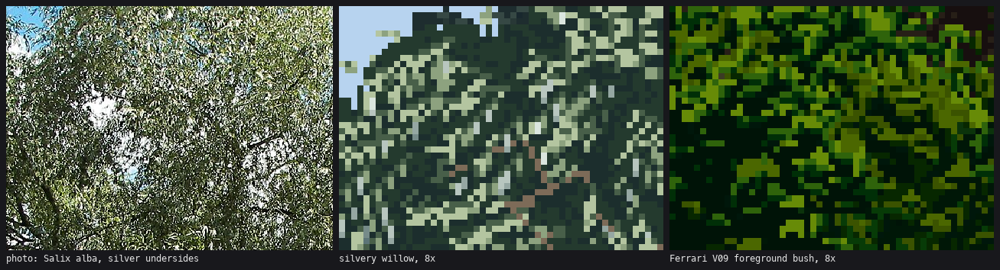
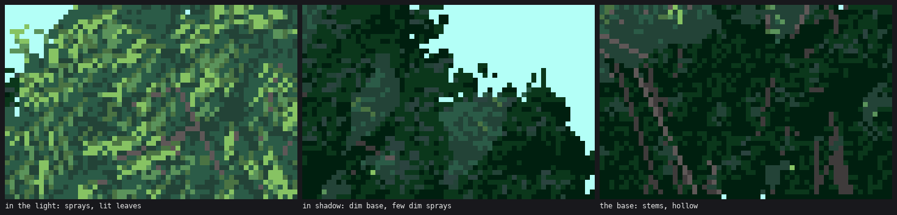
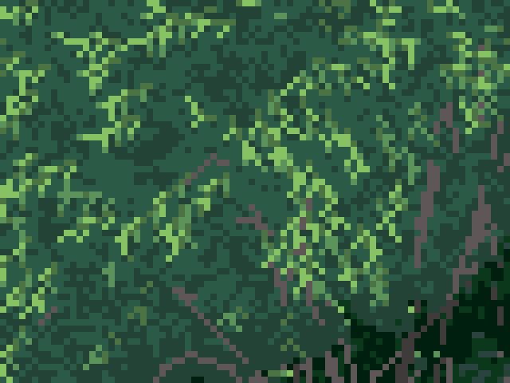

4. Leaves and stems
Back to the tutorial. Code: willow_spray, spray_marks, mid_speckle, stroke_run, snap_dir in code/foliage.py; clean_line, polyline_clean in code/wpaint.py.
Willow leaves are narrow and they hang. The studio critic judged this mark, with its silver undersides, ready for the renderer.

Six sprays drawn three ways by the real function. Left: leaves alternating sides, my first version, which crosses into X's. Middle: leaves hanging from the downward side. Right: with silver undersides.
Narrow things are clean runs
Every 1-px stroke (twig, leaf, wand, stem) is snapped to one of the clean pixel slopes: horizontal, 2:1, 1:1, 1:2, vertical. A 1-px line at an arbitrary angle jitters and reads as noise.
# foliage.py
def snap_dir(dx, dy):
ang = np.degrees(np.arctan2(dy, dx)) % 360
cands = [0, 26.57, 45, 63.43, 90, 116.57, 135, 153.43, 180, 206.57, 225, 243.43, 270, 296.57, 315, 333.43]
a = min(cands, key=lambda c: min(abs(c - ang), 360 - abs(c - ang)))
return np.radians(a)
stroke_run(x, y, ang, L) then walks L pixels along that slope, in runs of two for the 2:1 slopes.
The spray
A spray is a twig 4–8 px long along the local wand direction, with leaves 2–3 px long leaving it every 1–2 px, turned 30–55° off the twig and pulled downward. The leaves hang: 85% of them go to the side of the twig that points them down.
# willow_spray
down = 1 if np.sin(ang + np.radians(40)) > np.sin(ang - np.radians(40)) else -1
sd = down if rng.random() < one_side else side # one_side = 0.85
a = ang + sd * np.radians(rng.uniform(*leaf_ang))
vx, vy = np.cos(a), np.sin(a) + droop # droop = 0.5 pulls every leaf down
la = snap_dir(vx, vy)
pts = stroke_run(px, py, la, ll + 1)[1:]
Value inside the spray:
- a leaf whose upper face turns toward the sun takes the top step; the others one step down;
- the leaf's last pixel is one step darker than its body;
- the twig is two steps below the top;
- the twig's tip always carries a lit point;
- about a third of the leaves get a dark tuck (step 0) under their tip.
Silver undersides
A leaf on the underside of the twig (facing away from the light) has a silver_p chance of showing its pale underside. It's marked 10 + step, and the painter moves it to its own SILVER material:
silver = facing <= -0.2 and rng.random() < silver_p
...
if put(qx, qy, v) and silver:
S[qy, qx] = 10 + max(0, v) # the painter maps 10+ to the SILVER ramp
Silver as a separate material means every palette can colour it: grey-green in summer, near-white in the "silvery" season, pale straw in autumn (how-to 6).

The Salix alba photo, the silvery willow at 8×, and Ferrari's foreground bush.
Where the sprays go
spray_marks places sprays on the clump field from how-to 2: spray centres on a Poisson disc (3.4 px apart), accepted with a probability that rises from 0 at field 0.2 to 1 at the brightest, painted dim to bright. Sprays in a dimmer part of the field are drawn one or two steps down (dim). The shadow family gets no sprays at all, just the dark base with sparse dim marks.

In the light, in shadow, and at the base.
At middle distance
Below 110 px wide a bush has no room for sprays. There the mark is mid_speckle with dirs=: each small mark becomes a 2–3-px leaf pointing along the wand turned down 15–55°, again 85% on the downward side. It's the hedge speckle with a willow's direction.
Wands through the canopy
Between clumps, 40–60% of the wands show as broken arcs, but only over the dark base, never over lit marks. Draw them through every fourth Bézier point. Through every second, the short segments snap to different slopes and zigzag, and read as cracks:

Twigs through every second point, at 8×: veins and cracks.
Still short
In leaf the spray is the best thing I made. At middle distance the speckle-with-direction is fine but generic. And the leaves are all one length, where real willow leaves vary from long near the wand tip to short near its base.